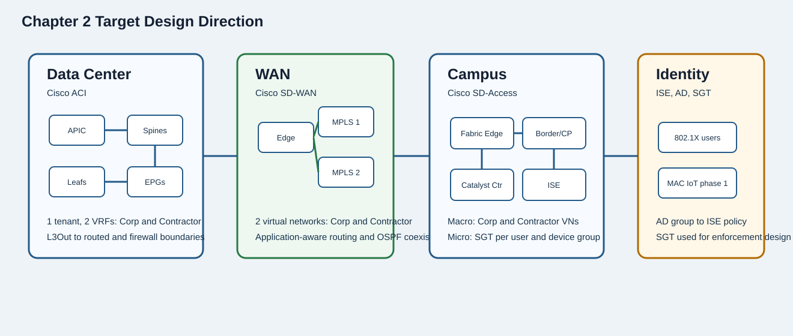
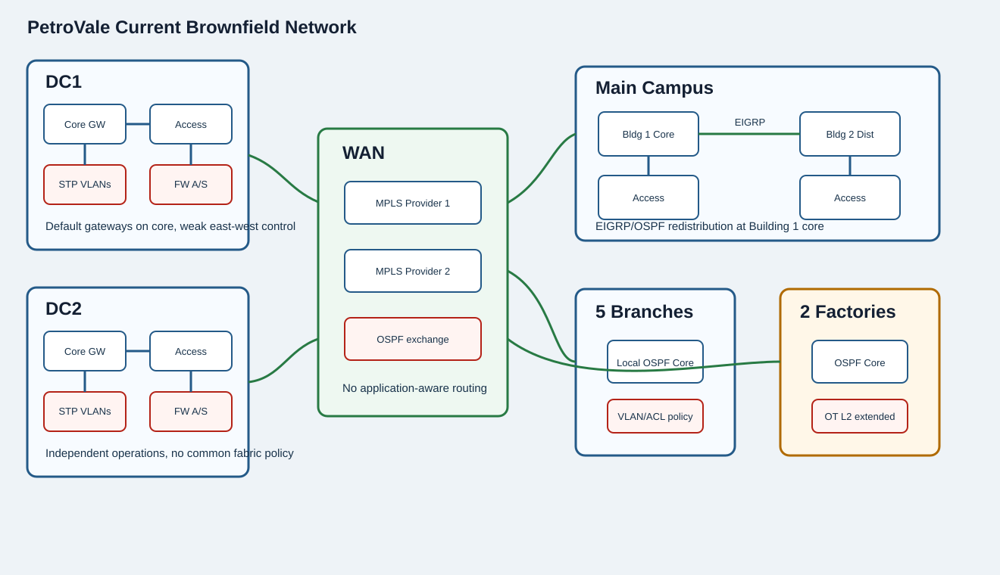
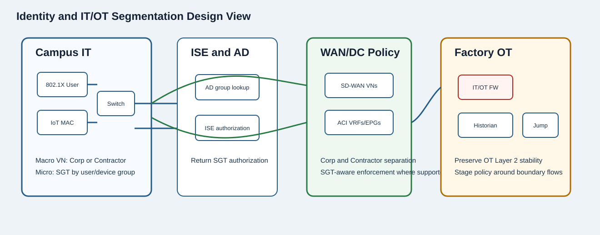

Company Background
PetroVale Energy SDN Design Workshop
PetroVale Energy is moving from SDN concept evaluation into design. The architecture direction for this chapter is to design the data center first with Cisco ACI, then WAN with Cisco SD-WAN, then campus with Cisco SD-Access and ISE-based identity policy.
Your Role
You are part of PetroVale's IT organization as the SDN Network Architect. Your responsibility is to evaluate design options, choose correct diagrams and traffic flows, identify authentication and enforcement points, and advise the architecture working group on a staged transition from the brownfield network to ACI, SD-WAN, SD-Access, and ISE-based policy.
Organization and Stakeholders
Executive Leadership
- Nguyễn Thu Hà, CEO - sponsors the modernization program and expects safe, staged business value.
- Trần Minh Linh, CIO - owns enterprise IT strategy and wants a coherent Cisco-oriented SDN design.
- Nguyễn Hoàng Minh, CTO - leads technical governance and validates routing, migration, and domain boundaries.
- Lê Thu Trang, CISO - owns cyber risk, segmentation, identity policy, and IT/OT security posture.
IT and Architecture
- You, SDN Network Architect - member of the IT team responsible for SDN architecture guidance.
- Phạm Quỳnh Anh, Enterprise Architect - coordinates ACI, SD-WAN, SD-Access, ISE, and migration boundaries.
- Đỗ Ngọc Lan, Director of Network Operations - owns NOC readiness, assurance, and operational transition.
- Vũ Đức Anh, Automation Lead - evaluates ISE/device data, telemetry, and later profiling phases.
Domain Stakeholders
- Nguyễn Văn Thành, Refinery Operations Manager - protects factory and OT availability during any transition.
- Trần Hải Yến, WAN Operations Lead - owns MPLS coexistence, OSPF exchange, and SD-WAN migration.
- Lê Quốc Bảo, Cloud Platform Lead - validates application flows and data center boundary behavior.
- Phạm Thùy Dương, VP Regional Operations - represents branch, factory, and business-user experience.
Design Priorities
- Move data center design toward Cisco ACI with one tenant and two VRFs: Corp and Contractor.
- Move WAN design toward Cisco SD-WAN with two virtual networks: Corp and Contractor.
- Move campus design toward Cisco SD-Access with macro segmentation and ISE-based microsegmentation.
- Use 802.1X for users; ISE uses AD group membership and instructs switches to apply SGTs.
- Classify IoT devices by MAC address in phase one, with profiling planned later.
- Preserve routing, firewall, and OT safety boundaries during migration.
Brownfield Constraints
- Two independent data centers use traditional two-tier switching; DC cores are default gateways for all VLANs.
- Each data center exits the internet through one active/standby firewall pair using a default route.
- WAN routers connect to remote offices and factories through two Layer 3 MPLS VPN providers using OSPF.
- The campus mixes two-tier and three-tier design, HSRP, EIGRP, OSPF, and redistribution.
- Five branches and two factories have local OSPF cores; OT is currently extended Layer 2.

Current Network Diagram
Brownfield Network Baseline
The current environment uses traditional routing, VLANs, ACLs, manual port assignment, basic SNMP monitoring, and a separate syslog server. These diagrams are the primary reference for design, migration, authentication, enforcement, and traffic-flow questions.

Current State
- Two independent DCs with traditional two-tier switching and core default gateways.
- WAN uses two Layer 3 MPLS VPN providers and OSPF route exchange.
- Main campus mixes two-tier and three-tier design with EIGRP-to-OSPF redistribution.
- Branches and factories have local OSPF cores; OT is extended Layer 2.
- Segmentation relies on VLANs and 5-tuple ACLs across many components.
Observed Challenges
- No application-aware WAN routing.
- No identity per user or IoT device and no current microsegmentation.
- No macro segmentation between corporate and contractor traffic.
- DC has weak east-west control and still depends on STP behavior.
- Users moving ports trigger manual outlet and VLAN troubleshooting.
Target Design Direction

Scenario Updates
Scenario Updates
A new record appears only when a stakeholder introduces a material constraint, misconception, operational risk, or governance decision that changes how the related question must be assessed.